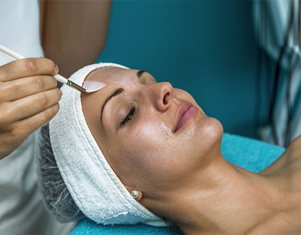
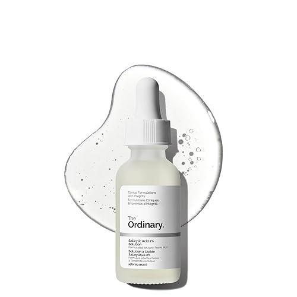

Types of Forehead Pimples & How to Identify Them
Not all forehead pimples are the same. Identifying the type of acne you have is the first step to choosing the right treatment.
| Type | Appearance & Identification | Root Cause |
|---|---|---|
| 1. Comedones | Whiteheads: Closed pores clogged with oil and dead skin cells (flesh-colored bumps). Blackheads: Open pores where the trapped oil oxidizes and turns dark. | Typically caused by excess oil, sweat, and clogged pores—common in people with oily skin. |
| 2. Inflammatory Acne | Papules: Red, swollen, and tender bumps without pus. Pustules: Red bumps with a visible white or yellow pus-filled center. | Often triggered by bacteria, hormonal changes, or irritation from skincare/hair products. |
| 3. Cystic Acne | Large, deep, painful lumps under the skin. They usually do not come to a head and carry a higher risk of scarring. | Requires dermatologist-recommended treatments—over-the-counter solutions are usually not enough. |
What Causes Forehead Pimples? (Most Common Triggers Explained)
Forehead pimples are often linked to daily habits, haircare routines, and internal factors. If you’re getting repeated breakouts on your forehead, one (or more) of these could be the reason:
1. Hair Oils & Haircare (Pomade Acne)
Using heavy oils like coconut oil, almond oil, or thick conditioners is very common—but these can clog pores. residue transfers from hair to skin, blocking follicles and trapping bacteria.
👉 Common sign: Pimples concentrated near the hairline or upper forehead.
2. Sweat + Friction (Acne Mechanica)
In hot and humid weather, sweat combined with friction can trigger acne. Wearing helmets, caps, or headbands traps sweat and oil, while friction irritates the skin and clogs pores.
👉 Common sign: Small, red bumps after sweating or long commutes.
3. Dandruff & Scalp Issues
Conditions like dandruff (Pityriasis capitis) don’t just affect your scalp—they spread to the forehead. Flakes and fungal overgrowth lead to irritation and acne along the hairline.
👉 Common sign: Pimples with itchiness or visible flakes.
4. Hormonal Changes & Stress
Hormonal fluctuations are a major cause, especially in the T-zone. Increased androgen levels lead to excess oil. Common during puberty, periods, PCOS, or high-stress phases.
👉 Common sign: Recurring or stubborn acne that doesn’t respond to basic skincare.
Other Hidden Causes (Often Missed)
Quick Self-Check: Identify Your Trigger
Likely haircare-related.
Friction/Sweat trigger.
Scalp issue involved.
Likely a hormonal cause.
What’s Causing Your Forehead Pimples?
Answer these quick questions to find the real reason behind your forehead acne 👇
Forehead Acne Map – What Your Breakout Area Means
Check haircare + scalp health
Focus on oil control, hormones, and stress
Best Treatments for Forehead Pimples (What Actually Works)

Best for mild acne and oily skin
- Multani Mitti: Absorbs excess oil.
👉 Best for: Oily skin. - Neem & Turmeric: Antibacterial.
👉 Best for: Inflamed acne. - Sandalwood: Cooling effect.
👉 Best for: Heat-induced acne.

Best for persistent or recurring acne
- Chemical Peels: Deep exfoliation.
- Laser Therapy: Bacterial elimination.
- Professional Extractions: Expert removal.

Best for daily acne control
- Salicylic Acid (BHA): Pore clearing.
- Benzoyl Peroxide: Bacteria killing.
- Niacinamide: Mark fading.